一本關於光、形狀與時間的生成藝術誌
A JOURNAL OF GENERATIVE ART
IN DIALOGUE
一株植物，
兩種留下形狀
的方法。
在「日光標本」裡，植物等待曝光，輪廓成為一片白。到了「藍曬葉脈」，形狀從內部開始：枝條朝養分靠近，走過的路，慢慢成為葉子。
這一輯把《慢物質》與《規則之後》放在一起閱讀。前者讓演算法靠近紙、銀鹽、玻璃與織物；後者讓簡單的規則走向複雜的形狀，也讓幾何與色塊學習在同一張平面上共處。兩種方法，在時間裡相遇。
間物編輯室 / 編輯手記風沒有形狀，
線替它記得。
一千條線循著流場前進；一張校樣讓顏色緩慢沉澱。
在筆觸與紙纖維之間，尋找同一種安靜。
薄處有光，
背面有顏色。
一張薄膜讓厚度成為色彩，一片紙讓翻折露出群青。
從材質的張力，走向「平面的八種禮節」：
讓出空間、等待套合，也為缺席與餘像留下位置。
02 THE COLLECTION
三十五種，
觀看的方式。
從感受靠近，從規則理解。
每一件都值得多看一會兒。
點進圖版，讓作品開始發生。 ↗
- 01 / S12GLSL · 媒材研究
觀看作品 ↗ 日光標本
Sun Herbarium · Cyanotype
這個畫面像植物在陽光下躺了一個午後，留下的白色影子。
應用植物或自然品牌首頁、手作工作室介紹、慢生活專欄頁首
- 02 / P07p5.js · 規則研究
觀看作品 ↗ 藍曬葉脈
Cyanotype Venation
看不見的養分散在葉形之中，枝條朝最近的那些生長，抵達之處，便把它們收下。
應用永續與農業品牌、知識圖譜、章節扉頁
- 03 / S01GLSL · 效果研究
觀看作品 ↗ 校樣之晨
Morning Proof · Grain Gradient Mesh
這個畫面像一張剛從印刷機取下的校樣，顏色還在紙纖維裡慢慢沉澱。
應用品牌首頁主視覺、作品集封面、長文頁首
- 04 / P01p5.js · 規則研究
觀看作品 ↗ 順風千行
A Thousand Lines Downwind
一千條線從左側出發，順著看不見的風前進，一碰到彼此，就安靜地停下。
應用品牌首頁主視覺、長文頁首、載入過場
- 05 / S15GLSL · 媒材研究
觀看作品 ↗ 北天曝光
North Sky · Long-Exposure Accumulation
這個畫面像一台整夜沒關的相機，把星星走過的路都留了下來。
應用天文與戶外品牌、攝影作品集首頁、夜間活動頁
- 06 / P09p5.js · 規則研究
觀看作品 ↗ 黃昏群舞
Murmuration at Dusk
每隻鳥只看身旁幾隻鄰居：靠近、對齊、別相撞。沒有領袖，形狀卻自己浮現。
應用社群與協作產品、互動式首頁、活動倒數頁
- 07 / G06p5.js · 平面關係
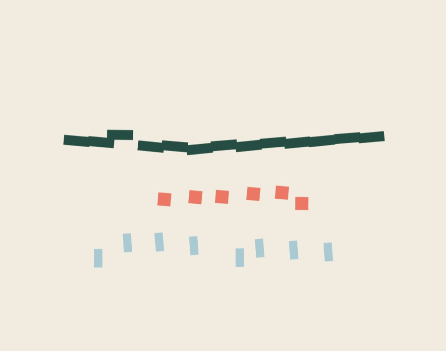
觀看作品 ↗晚到的那幾位
The Few Who Arrive Late
群體共享一套規則，個體仍保留自己的時間。
應用團隊介紹、協作產品、活動節目單
- 08 / S11GLSL · 媒材研究
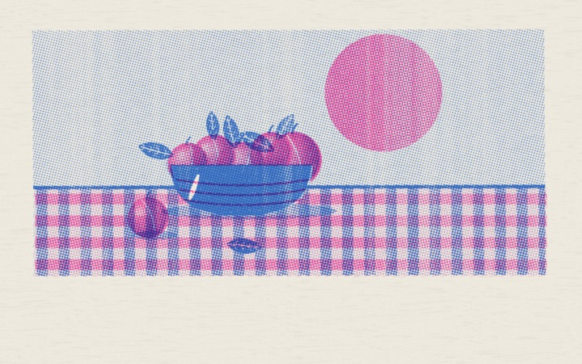
觀看作品 ↗套色
Two-Drum Still Life · Risograph Print
這個畫面像兩道油墨各走各的，在紙上偶然重疊。
應用獨立刊物與小誌網站、活動海報頁、文創品牌商品頁
- 09 / G02p5.js · 平面關係
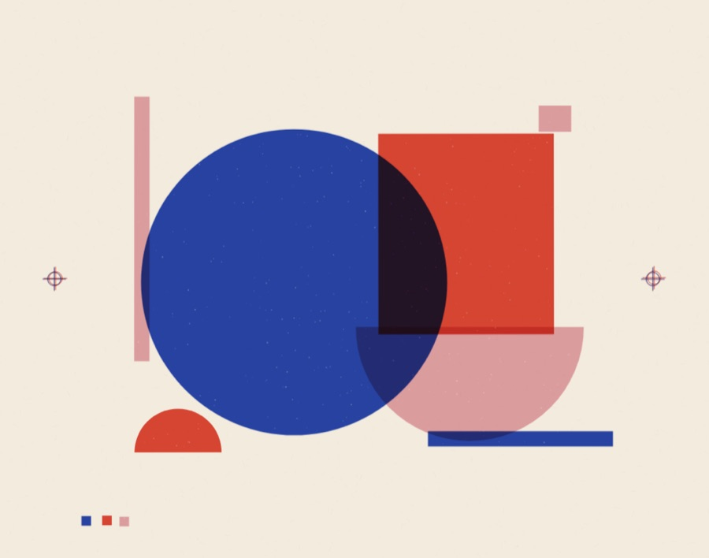
觀看作品 ↗三色未合
Three Inks, Not Yet One
影像的完整，是幾層各自存在的色彩在某個時刻相遇。
應用出版與印刷品牌、活動主視覺、頁首
- 10 / P03p5.js · 規則研究
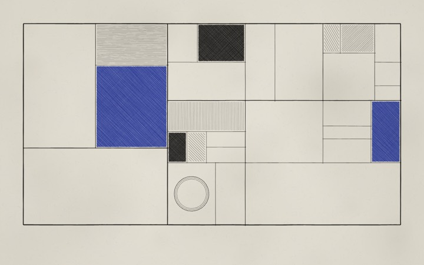
觀看作品 ↗切分的秩序
Order by Division
一個矩形被切成兩半，每一半再決定要不要繼續切，直到每個房間都剛好夠住。
應用作品集網格、建築事務所首頁、章節分隔
- 11 / G01p5.js · 平面關係
 觀看作品 ↗
觀看作品 ↗讓出一寸
An Inch, Given Up
一個區域取得更多空間，必然改變鄰近區域的存在方式。
應用關於我們、組織架構、資源分配說明
- 12 / G07p5.js · 平面關係
 觀看作品 ↗
觀看作品 ↗門後還有門
A Door Behind the Door
靠近一個局部，會改變它在世界裡的分量。
應用網站地圖、產品架構、知識導覽
- 13 / S04GLSL · 效果研究
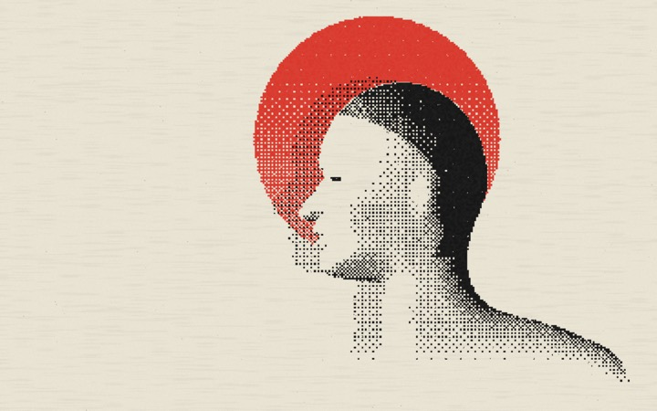
觀看作品 ↗側臉與紅日
Profile & Red Sun · Ordered Dither / Halftone
這個畫面像一張連夜印好、還帶著油墨味的傳單。
應用活動海報頁、獨立刊物封面、宣言式品牌頁首
- 14 / P10p5.js · 規則研究
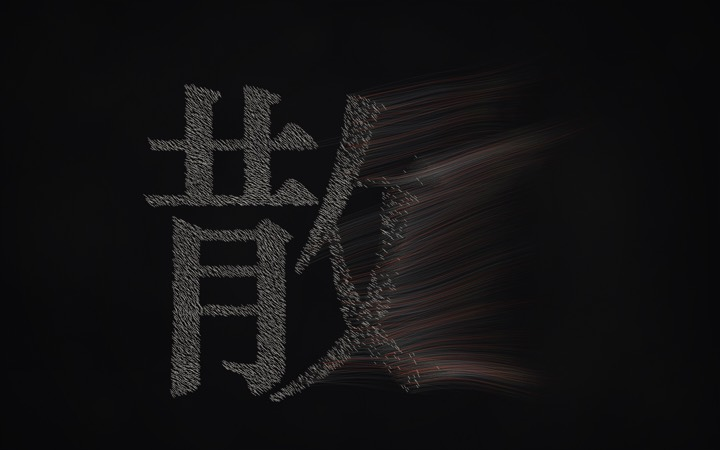
觀看作品 ↗字散
A Character Disperses
一個字被拆成上千枚細筆，左邊還記得自己的形狀，右邊已隨風離開。
應用標題動畫、品牌口號頁、展覽主視覺
- 15 / S05GLSL · 效果研究
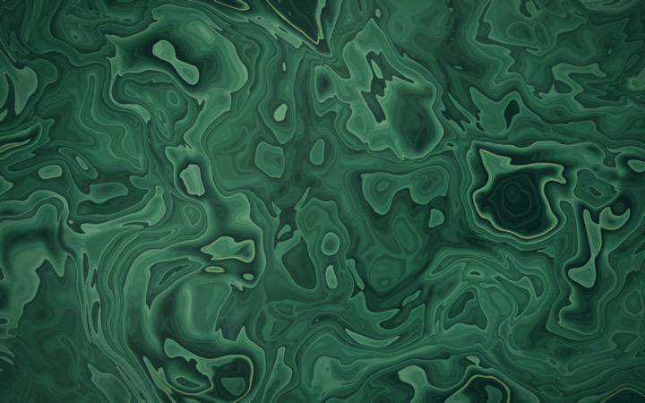
觀看作品 ↗石中之水
Water in Stone · Nested Domain Warp
這個畫面像剖開一塊石頭，看見它曾經是水。
應用珠寶與精品品牌主視覺、建材或室內設計作品頁、長文章節底圖
- 16 / P02p5.js · 規則研究
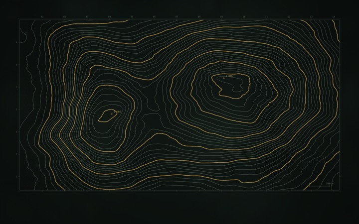
觀看作品 ↗靜默測繪
Quiet Survey
一座不存在的山被切成等距的薄片，每一片的邊緣，化成一條永不交錯的線。
應用數據產品背景、年度報告封面、關於我們
- 17 / S07GLSL · 效果研究
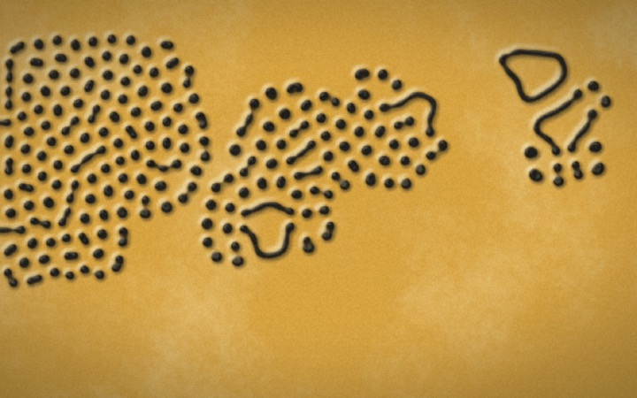
觀看作品 ↗石紋
Stele · Gray-Scott Reaction–Diffusion
這個畫面像一塊古老的石板，刻下的紋路還在石頭裡慢慢生長。
應用歷史或文化主題專題、博物館與展覽主視覺、品牌紋樣
- 18 / P06p5.js · 規則研究
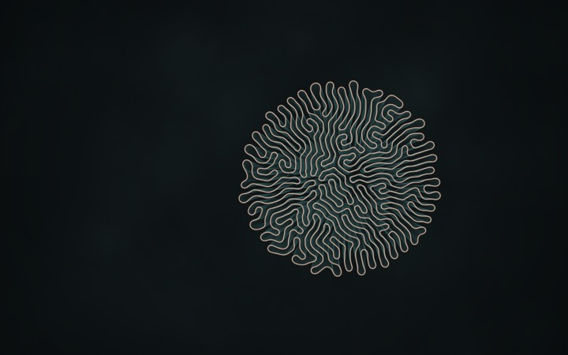
觀看作品 ↗夜珊瑚
Night Coral
一條閉合的線，相鄰的點牽著手，稍遠的點互相推開；線無處可去，只好向外起皺。
應用研究機構與實驗室、展覽頁、Hero 動態背景
- 19 / S14GLSL · 媒材研究
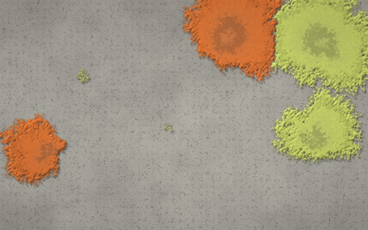
觀看作品 ↗石上地衣
Lichen on Stone · Stochastic Cellular Growth
這個畫面像一塊石頭，用幾十年慢慢記下自己被誰住過。
應用自然與永續品牌、研究單位網站、長篇專題的章節底圖
- 20 / P04p5.js · 規則研究
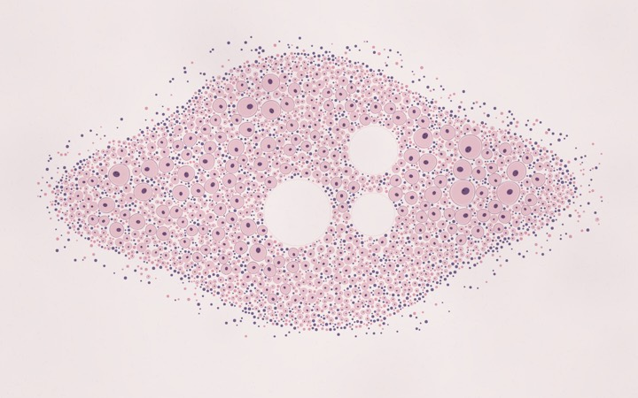
觀看作品 ↗細胞的禮貌
The Courtesy of Cells
每個圓從一點開始長大，碰到鄰居就停下，於是擁擠也有了禮貌。
應用生技醫療品牌、社群與成員頁、空狀態插圖
- 21 / S03GLSL · 效果研究
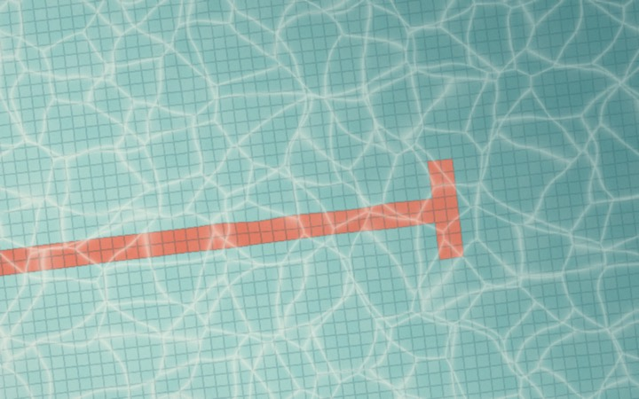
觀看作品 ↗午後泳池
Afternoon Pool · Liquid Ripple Distortion
這個畫面像午後無人的泳池，等著被指尖喚醒。
應用夏季活動頁、旅宿與生活品牌首頁、互動式頁首
- 22 / S17GLSL · 媒材研究
 觀看作品 ↗
觀看作品 ↗薄處有光
Where It Thins · Thin-Film Interference
這個畫面像一張薄到快要消失的膜，光在開口旁排出一圈一圈的顏色。
應用作品集封面、材質與光學研究、沉浸式展覽入口
- 23 / G03p5.js · 平面關係
 觀看作品 ↗
觀看作品 ↗背面也是顏色
The Back Is Also a Colour
看似完整的表面，仍保留著尚未被看見的一面。
應用產品揭曉、作品集封面、互動式說明
- 24 / S13GLSL · 媒材研究
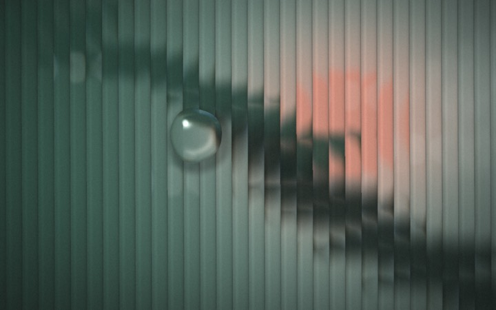
觀看作品 ↗隔著玻璃
Behind Reeded Glass · Refraction
這個畫面像隔著一扇老玻璃窗，看見午後模糊的庭院。
應用室內設計與建築事務所首頁、選物店形象頁、會員登入背景
- 25 / S10GLSL · 媒材研究
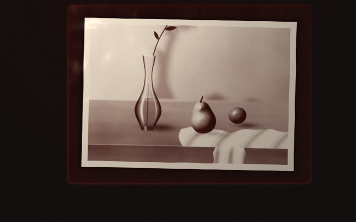
觀看作品 ↗顯影
Latent Hour · Darkroom Solarization
這個畫面像一張還在顯影液中、慢慢浮現的相片。
應用攝影作品集首頁、展覽開場、回憶與紀實專題頁首
- 26 / P08p5.js · 規則研究
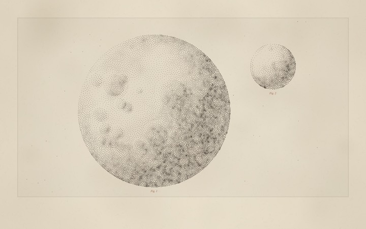
觀看作品 ↗銅版星圖
Copperplate Bodies
幾千枚墨點一次次移向自己領地中最暗的重心，直到明暗只剩疏密在說話。
應用出版與書封、博物館網站、長文插圖
- 27 / S06GLSL · 效果研究
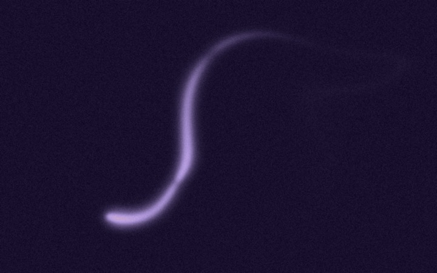
觀看作品 ↗殘光
Afterglow · Feedback Trails
這個畫面像黃昏裡被記住的一道光，走過之後還捨不得散去。
應用個人網站首頁、音樂或詩作專題、夜間模式主視覺
- 28 / G08p5.js · 平面關係
 觀看作品 ↗
觀看作品 ↗它剛剛在這裡
It Was Just Here
形狀離開之後，它曾經存在的位置仍在參與畫面。
應用回顧頁、版本紀錄、紀念專題
- 29 / S02GLSL · 效果研究
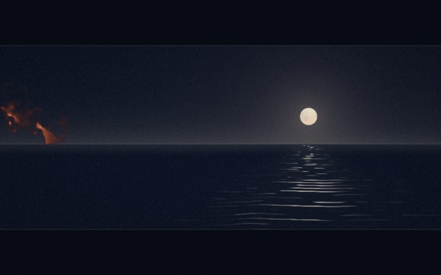
觀看作品 ↗兩卷底片
Two Reels · Noise Mask Dissolve
這個畫面像兩卷底片在放映機裡交換了記憶。
應用作品集章節轉場、影像品牌首頁、活動倒數頁
- 30 / S16GLSL · 媒材研究
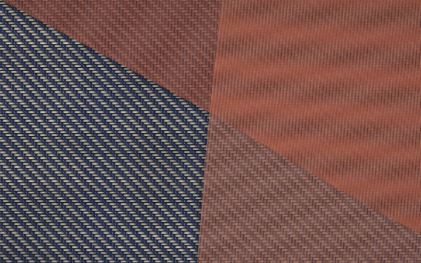
觀看作品 ↗紗上波紋
Veiled Weave · Textile Moiré
這個畫面像兩層布輕輕交疊，紋理之間浮出一片不存在的水光。
應用服飾與織品品牌、設計工作室首頁、展覽主視覺
- 31 / G05p5.js · 平面關係
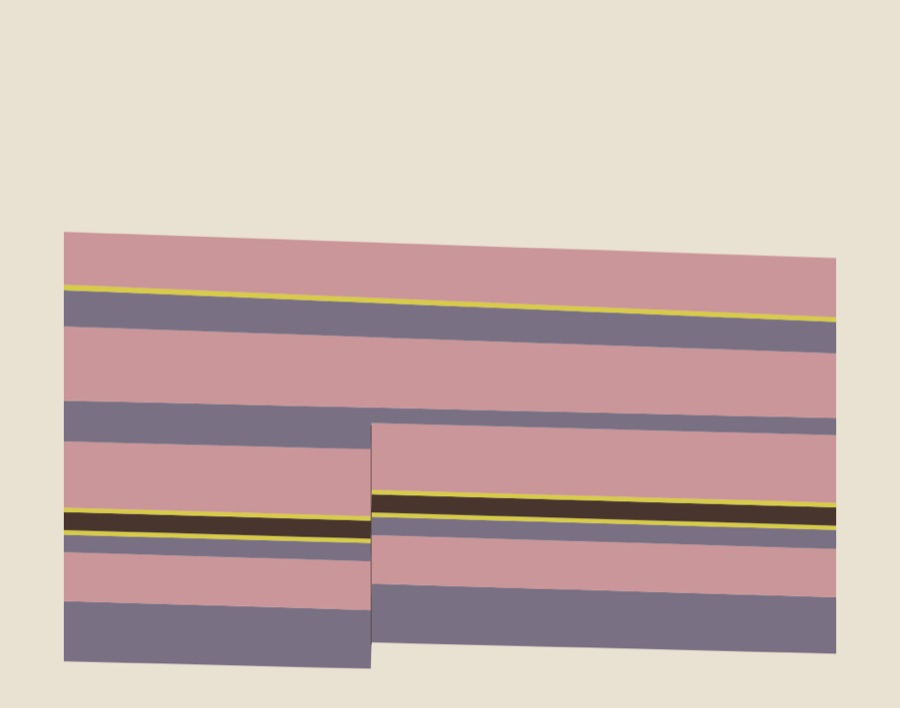
觀看作品 ↗讀過的厚度
The Thickness of What Was Read
時間被轉譯成厚度，閱讀留下不同顏色的層。
應用年表、長文閱讀進度、歷史頁
- 32 / P05p5.js · 規則研究
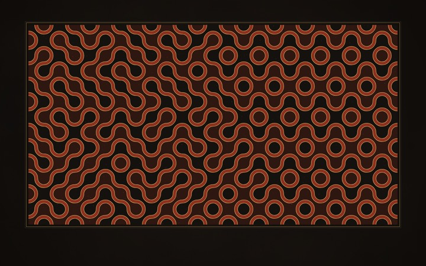
觀看作品 ↗漆金結
Lacquer Knot
每塊磚只能選擇轉或不轉，金線卻因此再也找不到起點與終點。
應用頁尾紋樣、包裝與票券、節慶活動頁
- 33 / S09GLSL · 效果研究
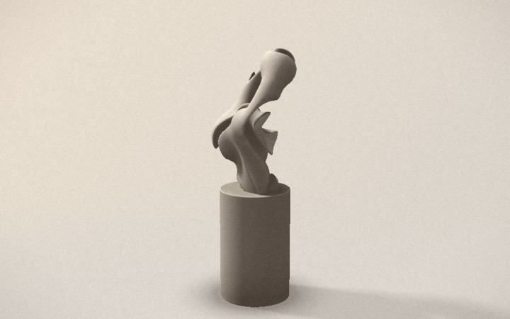
觀看作品 ↗石膏習作
Plaster Study · Raymarched SDF
這個畫面像美術館角落的一件石膏習作，光在它的孔洞裡慢慢午睡。
應用建築或設計事務所首頁、藝廊展覽頁、產品形象頁
- 34 / G04p5.js · 平面關係
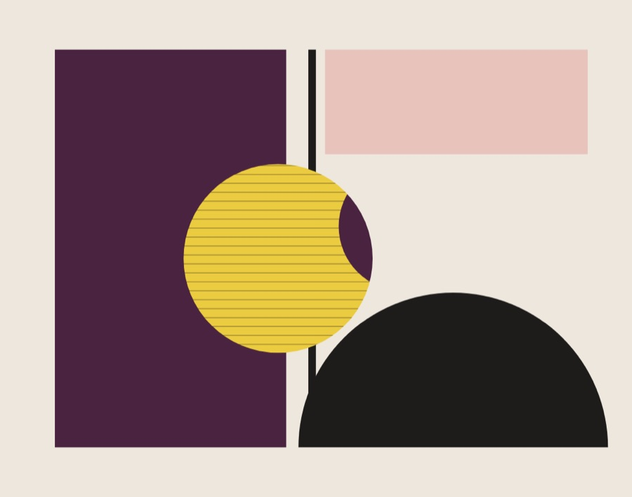
觀看作品 ↗缺席者的散步
The Absent One Takes a Walk
空白能夠改變色塊的形狀，也能改變觀看的重心。
應用首頁主視覺、攝影作品集、品牌宣言
- 35 / S08GLSL · 效果研究
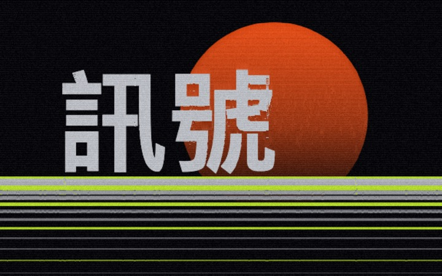
觀看作品 ↗斷訊
Signal Loss · GPU Pixel Sorting
這個畫面像一則正在融化的訊號，字還在，意思卻一行行往下流。
應用科技品牌發表頁、音樂專輯或活動主視覺、404 與維護頁
這一頁，暫時留白。
試試「植物」、「時間」或其他關鍵字。規則寫好之後，
世界才開始生長。